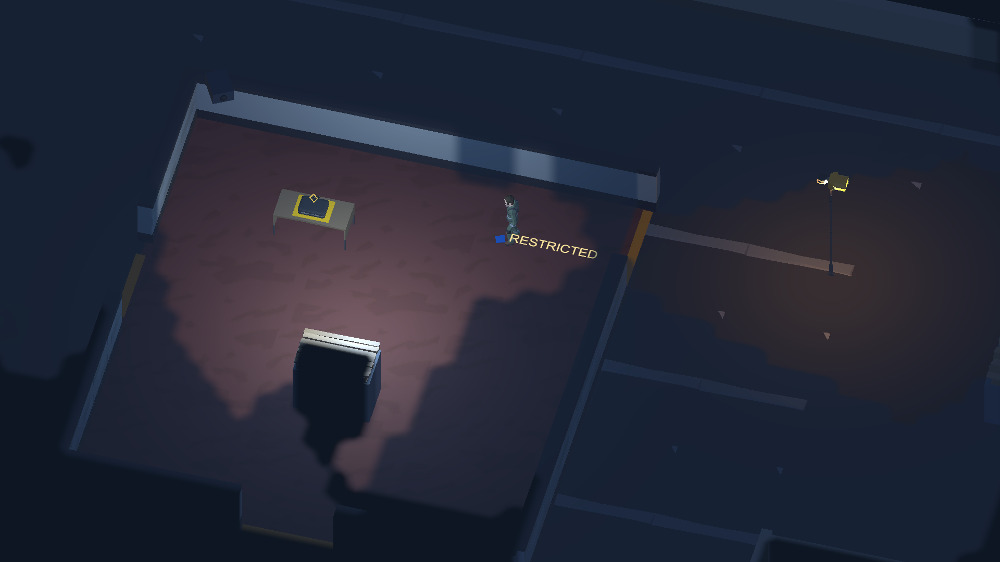
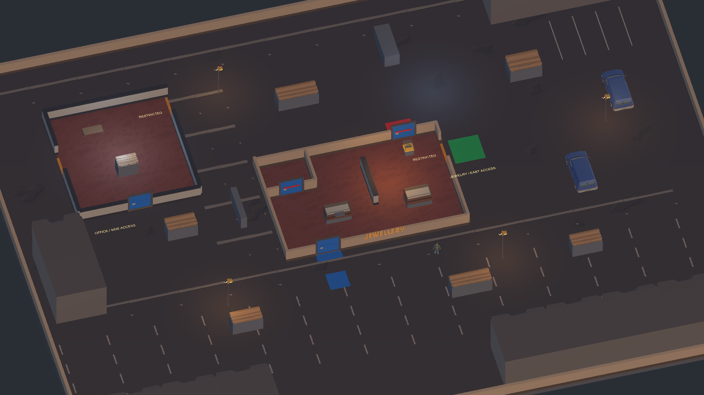
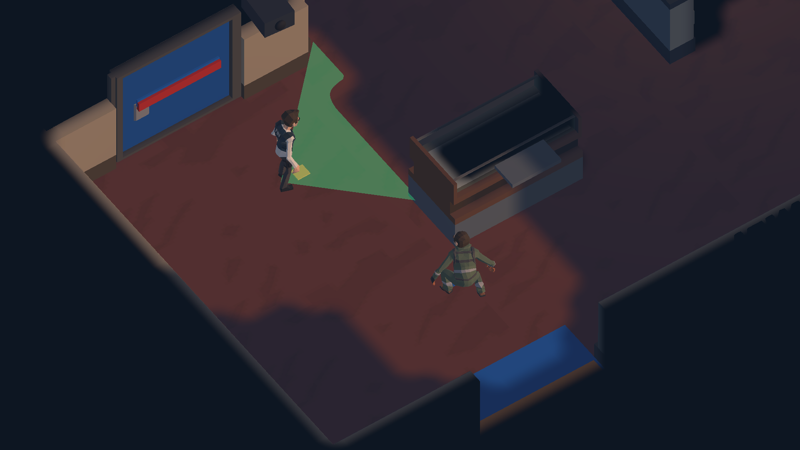
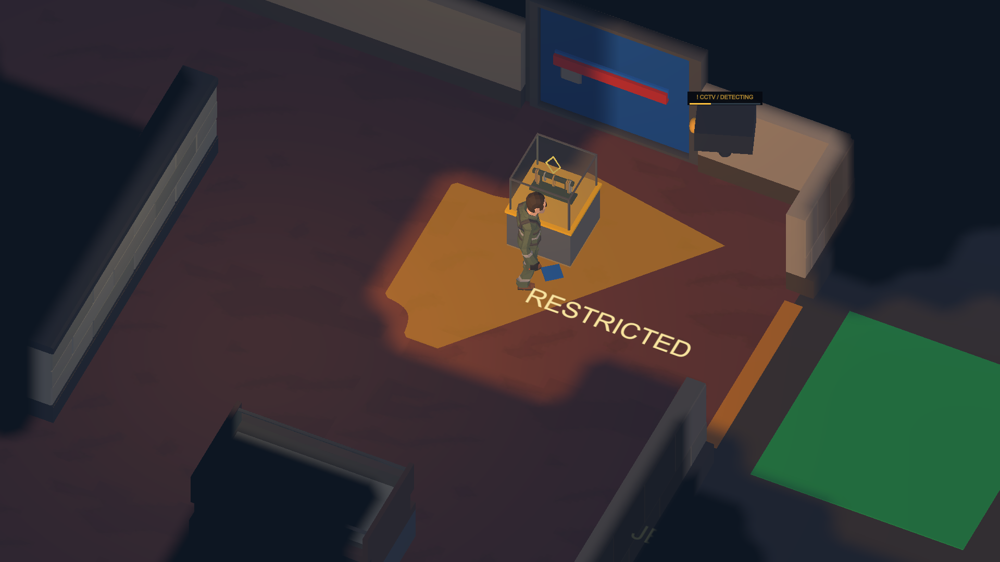
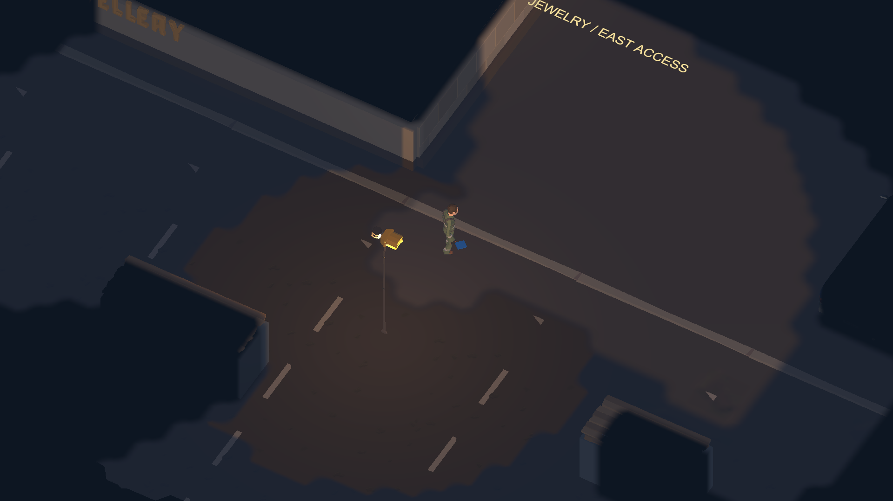
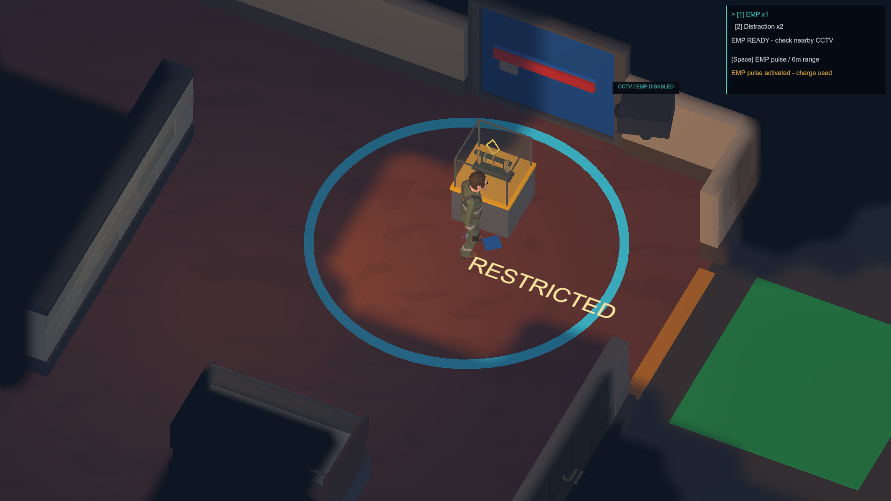
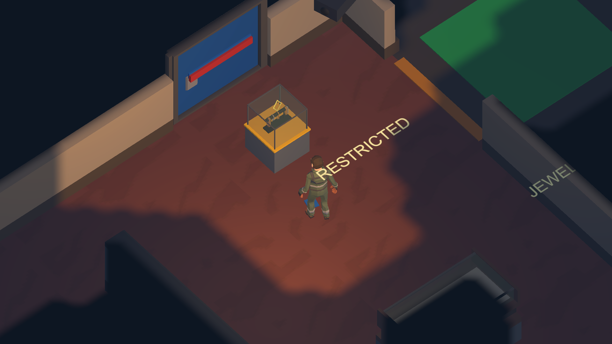

CITY HEIST
PLAN THE ROUTE.
TAKE THE OBJECTIVE.
GET OUT.
A small single-player
stealth-and-escape game.
IN DEVELOPMENT · WINDOWS PC · UNITY

A WAY IN.
A WAY OUT.
Read the room.
Choose an entry route.
Steal the objective.
Escape after security changes.
A jewelry store. An office. The alleys between them. Three missions share one city block, changing the target, security and route home.

DON’T
BE
SEEN.

Watch the patrol.
Move when there’s an opening.
Guards grow suspicious, chase when they spot you, and search your last known position when you break sight. You can’t fight your way through. Find cover and make another plan.
A camera covers the doorway.
A wall hides what comes next.
You have to get close enough to know.
CAMERAS
DON’T
BLINK.


Explored streets leave a dark memory. Unseen guards stay hidden. A camera you’ve discovered does not reveal its live sweep once it leaves your sight.
TRAVEL LIGHT.

EMP
Disable nearby CCTV for a short window. Cross before it comes back.
LOCKPICK
A locked door can be a shortcut. Opening it takes time — and a place to stay still.
DISTRACTION
Draw a nearby guard toward a sound. Use the space they leave behind.
NOW GET OUT.
Take the objective.
Security changes.
Find your way out.

An alarm changes the patrol. Reaching the exit isn’t enough while you’re still being watched. Break sight, then get clear.
STILL
ON THE JOB.
City Heist is a playable prototype in development. The core loop is in place; the UI, art, sound and balance are still being worked on.
No public playable build yet.
- Single-player
- Windows PC target
- 3D quarter-view / top-down
- Guards and CCTV
- Three missions
- EMP / Lockpick / Distraction
- No combat in the MVP
Screenshots are staged captures from the actual Unity prototype, with camera and character positions arranged for clarity. Detail shots retain player visibility; most HUD elements are hidden. Human playtesting and balance review are ongoing.